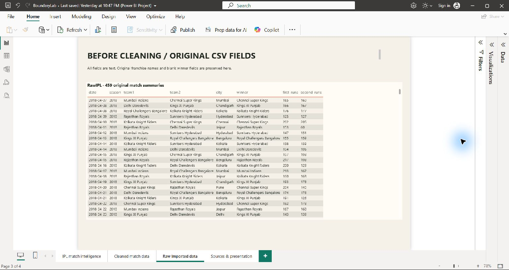
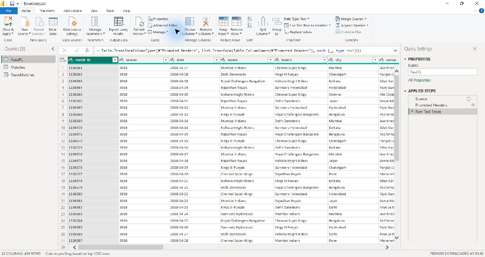
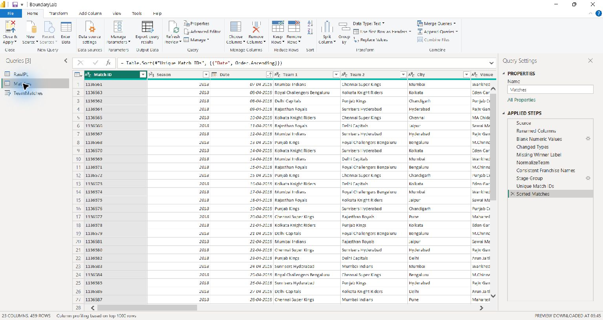
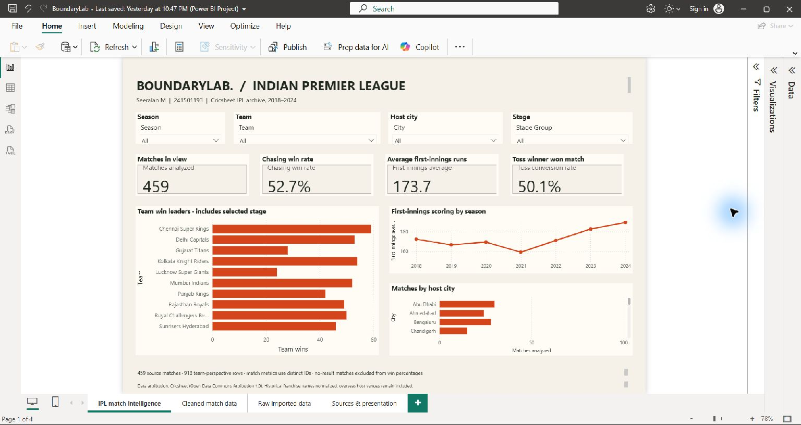
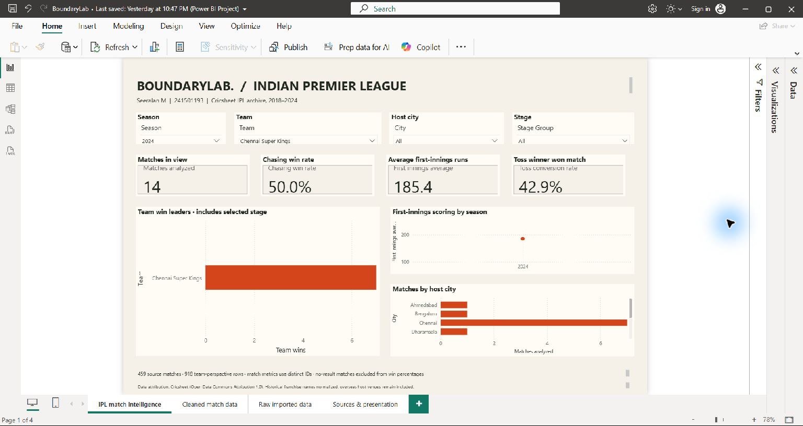
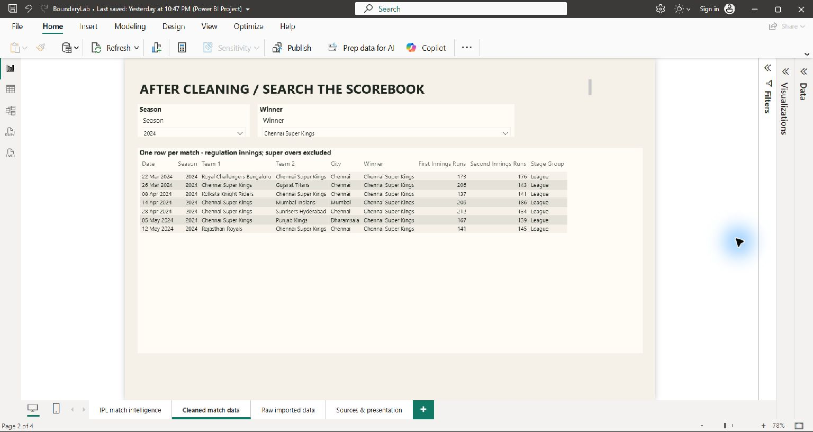

BoundaryLab — Power BI Desktop evidence
Seeralan M · 241501193 · Native application screenshots
Original source records

01_raw_data.pngPower Query: raw text fields

02_power_query_before.pngPower Query: final cleaned query

03_power_query_after.pngDashboard: before slicers

04_dashboard_before_slicers.pngDashboard: after slicers

05_dashboard_after_slicers.pngFiltered data records

06_filtered_data.png